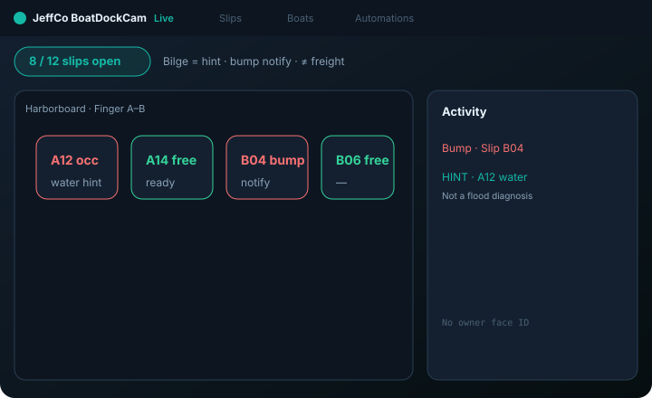
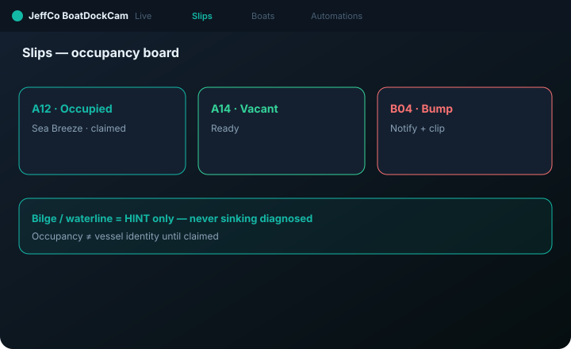
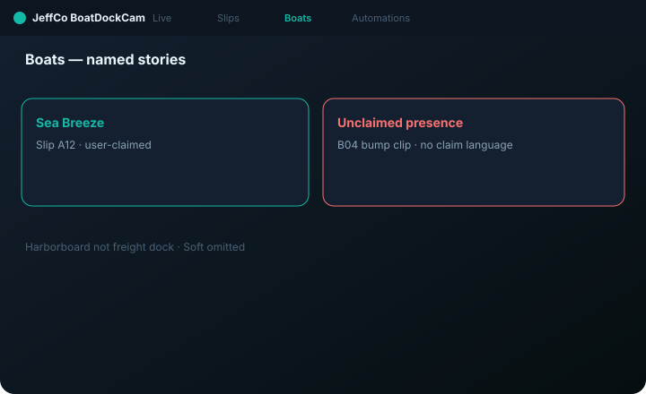

BoatDockCam
Marina / slip ops — occupancy, bump, bilge hint — harborboard, not freight dock.
For marina ops who name boats and stay sharp on bumps — bilge is hint, not sinking diagnosis.

What it does
BoatDockCam runs marina slip ops: Live slip overlay, Slips occupancy board, Boats CRM with nicknames, and Automations for vacant/occupied / bump notify.
Bilge and waterline signals are hints with gentle cooldowns — never marine survey or sinking diagnosis CTAs. Occupancy is present/absent until the operator claims a boat profile. Keep IA visually and verbally distinct from DockCam freight bays.
No owner face ID day one. Bump = notify + clip — not insurance claim language.
Capabilities
Day-one surface vs Advanced / gated — from Clarity GH Pages pack.
Day-one surface
Live
Day oneSlip overlay
Slips
Day oneOccupancy board
Boats
Day oneNamed boat stories
Automations
Day oneVacant/occupied / bump Notify (dry-run)
Advanced / gated
Marine survey / sinking diagnosis
OutForbidden CTAs
Freight bay metaphors
OutUse DockCam
How to use it
First-run (wizard)
Add a feed
covering the slips.
Draw slips
harborboard geometry.
Occupancy or bump proof
Continue locked until proof.
Step E: Notify me
(dry-run) or Skip.
Read bilge = hint copy before Finish
—
Add feed
—
Draw slips
—
Occupancy or bump proof
—
Step E
Notify me (dry-run).
Read bilge = hint
Copy.
Daily loop
Live harborboard
slip occupancy at a glance
Bump / unexpected vacant-occupied first
—
Boats CRM nicknames and notes
—
Gentle traffic on waterline/bilge hints
no panic-spam; respect cooldowns
Badge: bump / occupancy / cam
not sleeping workers
Live harborboard
—
Bump / unexpected vacant-occupied
First.
Boats CRM nicknames
—
Gentle traffic on waterline hints
No panic-spam.
Badge
Bump / occupancy / cam.
Honesty / trust
Bilge = hint; bump notify; ≠ DockCam.
- Bilge/water = hint — never “sinking diagnosed.”
- Bump = notify + clip — not insurance claim language.
- Occupancy ≠ vessel identity until user claims a boat profile.
- No owner face ID day one.
- Never reuse DockCam freight nouns (bay/door/pallet).
- Dry-run ≠ live notify until armed.
Screenshots
Domain frames elevated from Design UI mocks + Clarity captions.


Get started
Clone jeffco-boatdockcam-module · read docs · open setup wizard.